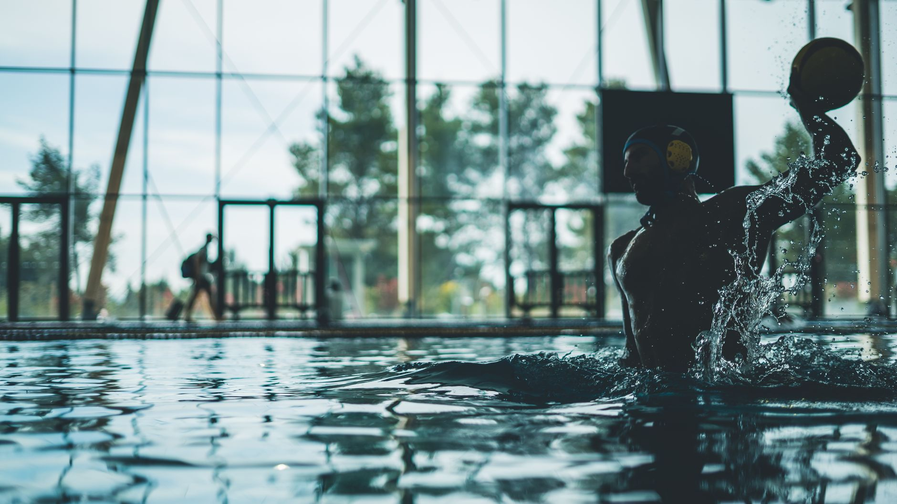

USA Water Polo Celebrates Its Best Young Players
USA Water Polo recently announced the 2026 Junior Olympics All-Tournament Teams, recognizing the most outstanding young athletes competing at one of the most prestigious youth water polo tournaments in the nation. This announcement is more than a list of names — it is a celebration of years of hard work, early mornings, disciplined training, and a deep love for the sport of water polo.
For parents and young athletes in Wesley Chapel, Land O' Lakes, and the greater Tampa Bay area, news like this is both inspiring and instructive. It raises a meaningful question: what does it actually take to develop a player who competes and thrives at the national level?
The Junior Olympics: A Benchmark for Youth Water Polo Excellence
The USA Water Polo Junior Olympics is widely regarded as the top competitive stage for youth players in the United States. Teams from across the country spend months preparing to compete at this event, and earning a spot on the All-Tournament Team means a player has demonstrated exceptional skill, teamwork, leadership, and competitive composure under pressure.
These recognized players did not arrive at this level overnight. Behind every All-Tournament selection is a foundation built on consistent coaching, structured skill development, and a team environment that challenges young athletes to grow both in and out of the water.
What Elite Development Actually Looks Like
Parents who watch their children fall in love with water polo often wonder how to best support that passion. The pathways taken by Junior Olympics All-Tournament players offer some clear lessons for families at every stage of youth athletic development.
- Start with fundamentals: The most accomplished players build their game on strong basic skills — passing accuracy, body position, eggbeater kick strength, and defensive awareness. These are developed through repetition and quality coaching, not shortcuts.
- Prioritize consistent training: Young athletes who reach national recognition are not part-time participants. They commit to regular practice schedules and treat each session as an opportunity to improve, even when progress feels slow.
- Develop water confidence and swimming fitness: Water polo is as much a swimming sport as it is a throwing sport. Players who excel at the Junior Olympics level are typically strong, efficient swimmers who can sustain effort throughout a full match.
- Embrace coachability: The best young players are those who listen, ask questions, and apply feedback. A growth mindset is one of the most reliable predictors of long-term athletic success.
- Compete in a team-first culture: Water polo is inherently collaborative. Players who understand their role within a team system and elevate those around them tend to stand out at every level of competition.
The Opportunity Right Here in Tampa Bay
Families in Wesley Chapel, Land O' Lakes, and the surrounding Tampa Bay communities do not need to look across the country to find quality water polo development. The sport is growing steadily in this region, and local programs are producing players who are increasingly competitive on the state and national stage.
At Nexar Aquatic Academy, young athletes receive structured training that emphasizes both the technical and competitive aspects of water polo from an early age. The goal is not simply to teach the game — it is to develop confident, capable, and coachable players who are prepared to compete at higher levels as they grow.
Inspiration With a Purpose
Announcements like the USA Water Polo Junior Olympics All-Tournament Teams serve an important purpose beyond recognition. They remind every young player in a local pool — including those practicing right now in Wesley Chapel and Land O' Lakes — that national-level achievement is a realistic goal when the right foundation is in place.
If your child has a passion for water polo or is just beginning to explore aquatic sports, now is the time to invest in their development. The players celebrated on those All-Tournament rosters were once beginners too. What set them apart was the decision to commit, to train with intention, and to trust the process — one practice at a time.
Reach out to Nexar Aquatic Academy to learn more about how our programs support young athletes at every stage of their water polo journey.
Ready to get in the water?
First practice is completely FREE — no commitment needed.